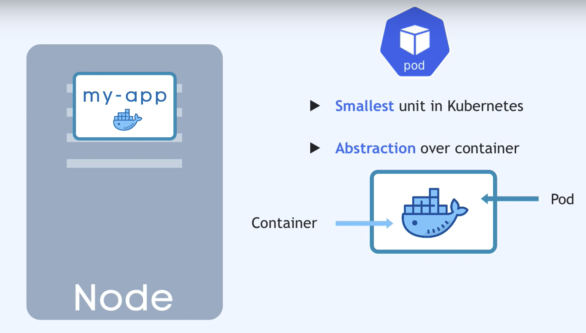
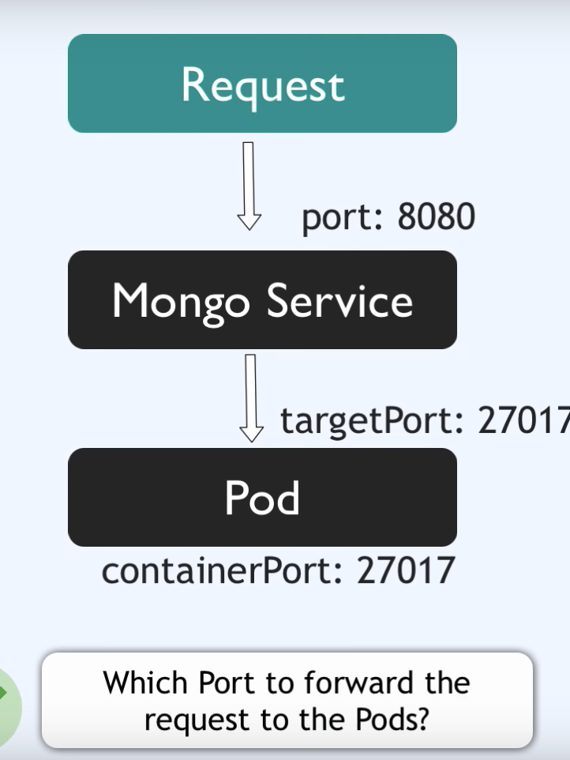
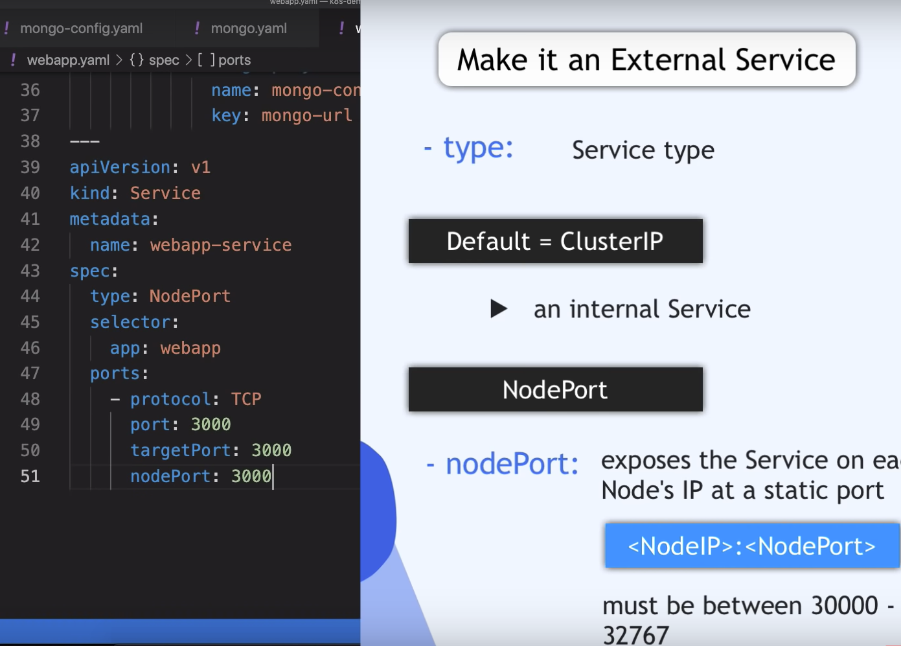

ZLI Module 109
"Dienste in der Public Cloud betreiben und überwachen" Course: https://moodle.zli.ch/course/view.php?id=1610
Auftrag 1.1: Einfache HTML Seite erstellen und mit FTP «deployen»
Auftrag 2.2: Git zur Sourcecode- und Konfigurationsverwaltung
https://moodle.zli.ch/mod/h5pactivity/view.php?id=116428
https://github.com/Sephley/Zli-m109
Configure git username & email
git config --global user.name "user"
git config --global user.email "mail@mail.com"
Auftrag 2.3: GitHub Einführung
https://github.com/Sephley/Zli-m109
Auftrag 3.2:
sudo apt install -y apt-transport-https ca-certificates curl gnupg-agent software-properties-common
Intallation minikube
Minikube can create a cluster containing only one node.
sudo apt install curl wget apt-transport-https -y
wget https://storage.googleapis.com/minikube/releases/latest/minikube-linux-amd64
sudo cp minikube-linux-amd64 /usr/local/bin/minikube
sudo chmod +x /usr/local/bin/minikube
curl -LO https://storage.googleapis.com/kubernetes-release/release/`curl -s https://storage.googleapis.com/kubernetes-release/release/stable.txt`/bin/linux/amd64/kubectl
sudo mv kubectl /usr/local/bin/
chmod +x kubectl
minikube start --driver=docker
minikube addons enable ingress
minikube addons enable dashboard
minikube addons enable metrics-server
sudo reboot
Auftrag 4.2: Container Orchestration mit Docker Compose
see https://docs.docker.com/compose/gettingstarted/ for how to set up a generic docker-compose application
see https://github.com/Sephley/m109-site for all the files
Docker-compose requires a docker-compose.yml file that can set up multiple Containers.
Using docker compose up you start the containers
Kubernetes
Pod
The Pod is the smallest unit in Kubernetes, usually only runs 1 Application.
Each Pod gets its own IP address, not the container. They are rather ephemeral, which means they are prone to crash.


{kind=link}
{kind=link}
Service
is used to attach an IP address to a pod, so that if it dies, the new one just uses the service to retain the IP address.
It is possible to specify, whether the service is internal or external.
Ingress
Forwards IP-address of pod to domain name of application.
ConfigMap
Is the external Configuration of your application. Is only for non-confidential data! Unless you use secret to encrypt it.
Volumes / Storage
Attaches a physical storage to a Pod, can be locally connected or also via Cloud.
Think of it as an external drive plugged in to the kubernetes cluster.
Deployment
A deployment is a template for creating pods.
Kubernetes Configuration
deployments get sent to the API server.
Each config file (written in yml) has 3 parts. The metadata, the specification and the third part defines the type of configuration (like service or deployment).
Kubernetes always compares the desired state with the actual state and then does anything it can to reach the desired state if that is not the case.
Minikube - Kubernetes ganz einfach
see https://github.com/sephley/dev_minikube
also https://kubernetes.io/docs/home/
Note that the names 'mongo-config' or 'mongo-secret' do not need to be named this way. Kubernetes uses the 'name: ' key to differenciate between stuff.
mongo-config.yml
mongo-config.yml is the ConfigMap Configuration File. You should only create this once as you will reference it a lot.
mongo-secret.yml
mongo-secret.yml add your encode secrets (username and password) into this file.
to encode you can run: echo -n <word to encode> | base64
Once you have added these values they can be referenced by different deployments.
mongo.yml
mongo.yml
the spec section of the file specifys the deployment specific stuff like type of webserver.
the template section is like a whole new deployment with its own spec section etc. It configures the Pod within the deployment. You also set your docker image here.
lables are key/value pairs. They are for identifiying the "family" of the pods, so that for example two pods with the same label would have similar application running on them. Lables are required of Pods and are good practice for anythin else.
You can call the labes whatever you want, it just has to be in key/value format like: "app: nginx" or "mykey: myvalue". "app:" is the standard key.
selector defines that all the pods that have label x belong to deployment y.
replicas defines how many pods you want to create with the deployment.
webapp.yml
webapp.yml is very similar to te mongo.yml file, as it is what runs the webservice based on the mongodb. The deployment is exactly the same, except for labels and the extra envirionment variable.
You can reference things from other files using valueFrom. This applies to all files.
type: Nodeport The nodePort is used to make the service available externally. Must be between 30000-32767.

{kind=link}
Deployment
kubectl apply -f mongo-config.yaml
kubectl apply -f mongo-secret.yaml
kubectl apply -f mongo.yaml
kubectl apply -f webapp.yaml
kubectl get all outputs all the components created in the cluster, whicht includes deployments, pods and all the services.
kubectl get can be used for everything in the cluster, like secrets, configmap, pods etc. Example: kubectl get secret
kubectl --help for help lol. You can also use the --help parameter for kubectl get more specific help.
kubectl describe service webapp-service to get info on your webapp deployment. Outputs stuff like IP, name, port etc. also works for pods: kubectl describe pod mongo-deployment-564b4bdfdf-jx66n you can see name of pod from kubectl get output.
kubectl logs mongo-deployment-564b4bdfdf-jx66n to see logs.
minikube ip to get IP. Now your application is accessible in your webbrowser. Remember to specify the external port (nodePort).
Auftrag 7: Quotes App
Username:
joshur (namespace = joshur-dev)
API token: sha256~sIwXmH5DFLbWQHjn3RFzq2VvJGurkt2QN2xeFdV9h8Y
Login command: oc login --token=sha256~sIwXmH5DFLbWQHjn3RFzq2VvJGurkt2QN2xeFdV9h8Y --server=https://api.sandbox-m3.1530.p1.openshiftapps.com:6443
Variables
Username (username): joshur
Authorization token (token): sha256~sIwXmH5DFLbWQHjn3RFzq2VvJGurkt2QN2xeFdV9h8Y
API server URL (api_server_url): https://api.sandbox-m3.1530.p1.openshiftapps.com:6443
Name of the cluster (cluster_name): api-sandbox-m3-1530-p1-openshiftapps-com:6443
Context assigned to us (context): joshur-dev/api-sandbox-m3-1530-p1-openshiftapps-com:6443/joshur
Set Local Kubernetes configuration
Make sure to run the login command listed above before you proceed!
Set credentials: kubectl config set-credentials joshur/api-sandbox-m3-1530-p1-openshiftapps-com:6443 --token sha256~sIwXmH5DFLbWQHjn3RFzq2VvJGurkt2QN2xeFdV9h8Y
Set cluster: kubectl config set-cluster api-sandbox-m3-1530-p1-openshiftapps-com:6443 --server=https://api.sandbox-m3.1530.p1.openshiftapps.com:6443
Set context: kubectl config set-context joshur-dev/api-sandbox-m3-1530-p1-openshiftapps-com:6443/joshur --user=joshur/https://api.sandbox-m3.1530.p1.openshiftapps.com:6443 --namespace=joshur-dev --cluster=api-sandbox-m3-1530-p1-openshiftapps-com:6443
Use context: kubectl config use-context joshur-dev/api-sandbox-m3-1530-p1-openshiftapps-com:6443/joshur
Create files
First, clone the repositories that contain the yml files we need.
git clone https://github.com/redhat-developer-demos/quotesweb.git
git clone https://github.com/redhat-developer-demos/quotemysql.git
git clone https://github.com/redhat-developer-demos/qotd-python.git
Create the following files in the qotd-python/k8s directory
kubectl create -f quotes-deployment.yaml
kubectl create -f service.yaml
kubectl create -f route.yaml
use kubectl get routes to view your new routes.
run curl https://quotes-joshur-dev.apps.sandbox-m3.1530.p1.openshiftapps.com/quotes to see your file.
repo links
https://github.com/redhat-developer-demos/quotesweb/
https://github.com/redhat-developer-demos/qotd-python/
https://github.com/redhat-developer-demos/quotemysql/